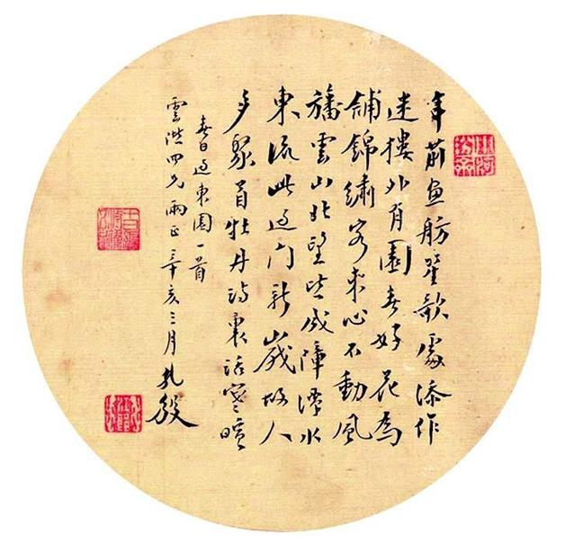
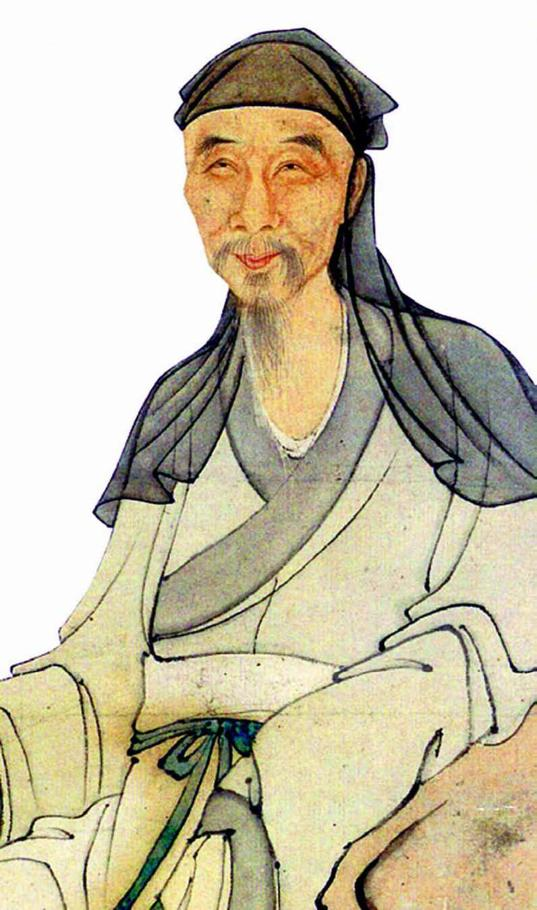
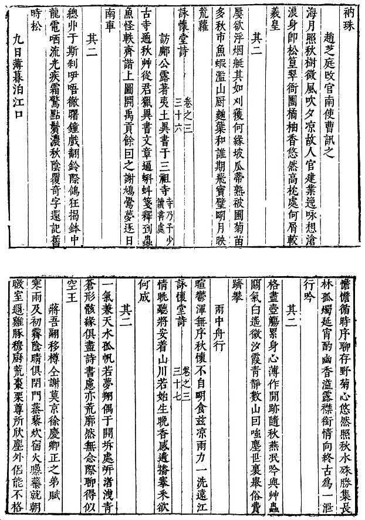
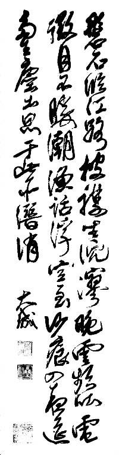

十
弘光间，马、阮并称。但论做权奸的天分，马士英不及阮大铖远甚。后者甲申年九月起用，权势激增，大有后来居上之势。起初，他以马士英为靠山，后来实已将其甩开而另抱粗腿。确定吏部尚书人选一事，显示某种程度上，阮大铖的权势已能与马士英分庭抗礼。当时，马士英属意张国维，阮大铖则欲用张捷；某日，忽接中旨，任命张捷为吏部尚书。“内传忽出，士英抚床惊愕，自此始惮大铖。”[73]要知道，阮大铖此时官职不过是兵部右侍郎，马士英却是内阁首辅；换言之，总理干不过一个副部长。其实，从阮大铖通过大太监为自己拿到兵部右侍郎的任命一事，已见出苗头。李清描述他的强势：“阮少司马大铖意气轩骜，侵挠铨政，其门如市。”[74]还提起一次亲身经历：
予以谒客过阮司马大铖门，见一司阍者，问曰：“主人在否？”阍者对曰：“若主人在，车马阗咽矣，如此寂寂耶？”予为一叹。[75]
可惜弘光朝太短命，前后存世一年，阮大铖则总共只有八个月来表现他的弄权天赋，从身陷逆案之人而冠带觐见，而添注兵部右侍郎，而兵部尚书兼右副都御史（乙酉年二月初六，1645年3月3日），虽未跻身内阁，但稍假时日，莫说入阁办事（其实他后来虽无阁臣之名，已有阁臣之实），取马士英而代之恐怕也指掌可取。
阮大铖追逐权力的推动力之一，自然源于报仇雪恨的渴求。他曾当面对吴梅村发出警告：
吴学士伟业以奉差行与阮戎政大铖别，大铖曰：“上仁柔主，一切生杀予夺，惟予与数公为政耳。归语声气诸君（你那些复社哥儿们），猿鹤梦隐，定不起同文之狱也。”[76]
似乎是网开一面：放下屠刀，犹可成佛；重点则实不在此，重点是“一切生杀予夺，惟予与数公为政耳”这一句。他当然不会停留于口头威胁，以“顺案”为突破口，切实付诸行动。
继周镳、雷祚下狱之后，更大的网拉开了。十月丙子（11月20日），安远侯柳祚昌（亦即为阮氏奏请添注兵部右侍郎的那人），疏讦翰林院学士徐汧：
自恃东林渠魁、复社护法。狼狈相倚，则有复社之凶张采、华允诚，至贪至横之举人杨廷枢。鹰犬先驱，则有极险极狂之监生顾杲。皇上定鼎金陵，而彼公然为《讨金陵檄》，所云“中原逐鹿、南国指马、祈哀犬羊、分地盗贼”，是何等语！乞大奋乾断，立逮徐汧，革去举人杨廷枢、监生顾杲，先行提问，其余徒党，容臣次第参指，恭请斧钺。[77]
疏入，皇帝的答复是：“命已之。”要他们不要这样搞。这答复，有可能出自朱由崧，也有可能出自马士英，因为后者可以代皇帝批复，同时对于兴大狱抱着多一事不如少一事的态度。然仅过八天，另一个东林死敌张孙振，便再上一疏，这次矛头所指已非复社愣头青，而是东林巨魁、崇祯大僚吴甡和郑三俊，以及现任苏松巡抚祁彪佳。[78]
明代艳妆仕女。
乌云堆雪，樱唇滴艳；丰肌弱骨，软襦绣衣。典型的明代气息，典型的“金陵春梦”——《红楼梦》所形容的“花柳繁华地、温柔富贵乡”。

江孔殷诗《春日过东园》。
江孔殷，清末进士，曾任江苏候补道。“年前鱼舫笙歌处，添作迷楼外有园。春好花为铺锦绣，客来心不动风旙……”此诗未必写秦淮，“迷楼”亦未必是昔年有名的顾媚故址，但其格调颇合秦淮河畔文人风雅。

老年冒襄。
冒襄，即冒辟疆，“四公子”之一。六次南京乡试，皆不中，却因而成为秦淮河闻人。为人风流倜傥，一时才俊莫不与之交，“咸把臂同游，眠食其中，各踞一胜，共睹欢场”。曾于1636年为魏学濂击退阮大铖，集东林冤死诸臣遗孤，举行桃叶渡大会，“一时同人咸大快余此举，而怀宁饮恨矣”。此为其老年绘像，而倜傥之风犹在。
《夫子庙》，姜松华作。
这是描绘南京夫子庙的当代油画作品，以大块红色为主调，上方为一轮暖阳。从景物看，画家是从来燕桥一带东望取景，因而所绘当为旭日朝阳时分。癸未年（1643）“仲春上丁”，夫子庙大概也蒙着这般色调与情绪。
原因在于，复社仅为枝叶，东林才是大树之根，抑或“针插不进，水泼不入”的地方保护伞。例如，祁彪佳之为阮大铖忌，主要是因为用顾杲为幕僚，从而被目作庇护者。阅《祁忠敏公日记》，确有多笔涉及顾杲。九月二十八日：
}kt}旬余来，盛传铨部（吏部）议欲转（改调）予，予知非欲优待，乃以议论意见不合，有外予之意也。前以一揭救左公祖（指左光先，“公祖”系尊称），已拂当路意。又因钱牧斋（钱谦益）言，东义之警有嘉禾二友早知于未变之前，惟锡山顾生名杲者能知二友，乃聘来晤于吴门归舟。及予至吴门，屡于礼贤馆晤之……不知顾生曾以讨檄得罪阮圆海，而予独取用，又触忌甚矣。[79]}/kt}
十月十六日：
薄暮，顾子方（顾杲，表字子方）偕台州顾南金入署，留酌于水镜斋。顾甚知南中局面消息，语多所未闻，且深劝予言去。[80]
从以上看，祁、顾相识乃是近期的事，祁从前并不知道顾杲曾主持《留都防乱公揭》。祁与顾交往，没有庇护关系，祁遇事会咨询于顾，与其说顾受益于祁，不如说倒是消息灵通的顾杲对祁彪佳帮助更多。南京政局日坏，祁是从顾杲那里了解到，辞职的建议也来自顾杲，而祁彪佳接受了这建议。十月二十一日，祁彪佳接钱谦益信，“已知予深为时局所忌，势不能留”[81]。二十六日，与赴任途中路过的杨龙友晤，杨是马士英亲戚，祁彪佳乘便表示归志，“求其转达马瑶草，必放予归”[82]。十一月初一，得知柳祚昌“参徐九一、杨维斗诸君子”事[83]。十一月初五，从友人书信读到张孙振对他的指控：
至是，见掌河南道张孙振言予力争皇上监国（当初，祁彪佳认为朱由崧立即登基不妥，宜以监国过渡）、阻建年号，请与吴鹿友（吴甡）、郑玄岳（郑三俊）同诛而末之。诬予无所不至，甚且指为奸贪。予唯一笑置之。[84]
由是请辞益坚，终于十一月十四日得到批准。其间有一重要情节，即祁彪佳拿到张孙振弹劾奏章后，曾转交给杨龙友，后者傍晚即过府拜访，且带来马士英手札一封，“以予才固殊绝，不肯即放”，杨龙友还转达马士英如下看法：“但论其（指祁彪佳）做官甚好，不必问意见异同也。”[85]祁彪佳对此感受良好，记入日记时，对马士英略其姓氏而称“瑶草”，语气欣慰。有野史说，张孙振劾祁彪佳为马士英所嗾，据此则明显不实。换言之，张孙振的幕后另有其人；这个人，从祁彪佳日记的线索求之，只能是“阮圆海”。
由祁彪佳所记，阮大铖与其党徒步步紧逼、张网掘阱的态势，一目了然。不少史著，包括《小腆纪传》《清史稿》，甚至权威的《明史》都说，顾杲、黄宗羲遭到逮捕。如《明史》称：“大铖又诬逮顾杲及左光斗弟光先下狱”[86]，《小腆纪传》“黄宗羲传”记述：“时方上书阙下，而祸作，与杲并逮”[87]。这是一个错误，顾、黄并未被捕。但逮捕令确已下达，对此，黄宗羲述之甚明：
阮大铖得志，以徐署丞疏逮子方及余。时邹虎臣（副都御史邹之麟）为掌院，与子方有姻连，故迟其驾帖。弘光出走，遂已。[88]
具体经办者加以拖延，以此幸免。吴应箕也是逮捕对象，“周镳下狱，应箕入视，大铖急捕之，亡命去。”[89]幸免者还有侯方域，他得到风声逃离南京前，留书阮大铖，立此存照：
昨夜方寝，而杨令君文骢（即杨龙友）叩门过仆曰：“左将军兵且来，都人汹汹，阮光禄飏言于清议堂，云子与有旧，且应之于内。

阮大铖《咏怀堂诗集》刻本。
民初，曾有一个阮大铖诗再发现小高潮。1916年，王伯沆费尽心力，觅得《咏怀堂诗集》《诗外集》四册。1921年，柳诒徵又偶然从南京旧书肆发现《辛巳诗》一册。因王、柳两先生的成果，1928年，南京国立中央大学国学图书馆盋山精舍以刻本印行《咏怀堂诗集》，不惜重金，品质极精。

阮大铖书法。
阮大铖确为全才型人物，诗、曲、书、园林、出版等诸多方面，或一时之选，或行家里手。此为其行书作品。
痛骂辣讽：
士君子稍知礼义，何至甘心作贼，万一有焉，此必日暮途穷，倒行而逆施……仆且去，可以不言语，然恐执事不察，终谓仆于长者傲，故敢述其区区。[90]
并非人人有此幸运，复社名流陈贞慧确实被捕，几死[91]。又下令逮捕吕大器、左光先（浙江巡按、左光斗堂弟）、户科给事中吴适。吕大器因先已返回四川老家，“以蜀地尽失，无可踪迹而止”[92]；左光先倒是抓到了，但押解途中“乱亟道阻，间行，走徽岭得免”[93]；吴适不幸，真的身陷囹圄，罪名是“东林嫡派，复社渠魁”[94]——至此，东林、复社已公然是论罪依据。终于，屠刀也举起来了，刀下之鬼便是周镳、雷祚，两人于乙酉年四月初九（1645年5月4日）遇害：
谓二人实召左兵（左良玉兵变），趣赐自尽。乃各作家书，互书“先帝遗臣”于腹，投缳死。遗命勿葬，如伍子胥抉目事，置棺雨花台侧，未浃月（不足一个月）而南都破矣。[95]
以上，仅为零散迫害，实际上阮大铖已做好准备，随时开展一个全面打击东林—复社分子运动，将其一网打尽，并拟就一份名单：
时孙振与阮戎政大铖欲阱诸异己，有十八罗汉、五十三参、七十二菩萨之说。[96]
《幸存录》也说：
未几，有妖僧者，自称先帝，又自称为某王，殆类病狂者，而张孙振与大铖欲借以起大狱，流传有十八罗汉五十三参之名，海内清流，皆入其内，如徐石麒、徐汧、陈子龙、祁彪佳之属咸列焉，即余未尝一日为京朝官、杨廷枢一老孝廉，而罗织俱欲首及之。[97]
之前，名单认定工作早就悄悄进行，“阮大铖作正续《蝗蝻录》、《蝇蚋录》，盖以东林为蝗，复社为蝻，诸和从者为蝇为蚋。”[98]蝗、蝇易懂，蝻是蝗之幼虫，蚋便是蚊子。他总共编了三本名册（《蝗蝻录》共有正、续两本），以蝗、蝻、蝇、蚋为比喻，分别列入东林、复社成员，以及东林、复社的追随者。然后，一直等待合适的时机。甲申年十二月起，接连发生大悲和尚、南来太子等案，因案情牵及帝位，阮大铖认为是绝好由头，就此发难。所谓“罗汉”、“菩萨”等名目，与魏忠贤编造《东林点将录》，比照《水浒传》一百单八将给东林要人逐一加派诨名的做法，一脉相承，等于阮大铖不打自招。此名单，《小腆纪年附考》第327、328页有较详披露，于兹不赘。而所有史家一致认为，名单一旦落实，国中清流，将无孑遗。
事在一发千钧之际。李清说：“非上宽仁，大狱兴矣。闻马辅士英亦不欲，故止诛大悲。”[99]夏允彝也说：“马（士英）意颇不欲杀人，故中止。”[100]除此外，还有更重要的原因，即左良玉突然兵变，以清君侧之名，拔营东来，阮大铖辈已无力将大狱付诸现实。
乙酉年三月二十五日[101]（1645年4月21日），左良玉自武昌反。左良玉与东林渊源甚深，他的“清君侧”，公开理由之一是替东林打抱不平，时人有诗，将该事件形容为“东林一路踏江南”[102]。左氏起兵前，在宣言中怒斥阮大铖：
睚眦杀人，如雷祚、周镳等，锻炼周内，株连蔓引。尤其甚者，借三案为题，凡生平不快意之人，一网打尽。令天下士民，重足解体。[103]
事变既生，马士英、阮大铖悉遣江北重兵迎拒左良玉，黄淮防线为之一空，清兵渡淮时，“如入无人之境”[104]。以此观之，明不亡于寇虏，而亡于党争之说，倒也凿然。